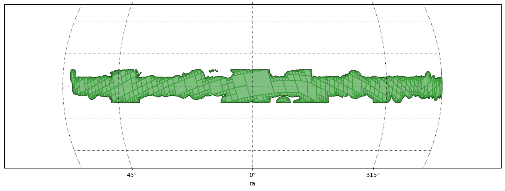
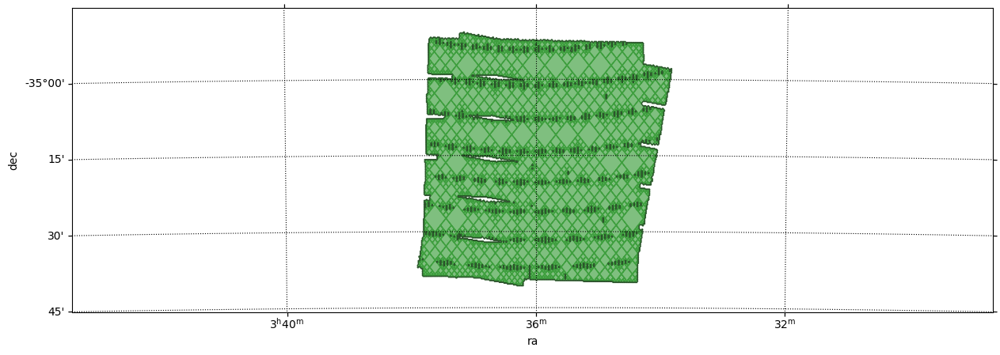

Construct a MOC from an image with a mask¶
[1]:
import astropy.units as u
import matplotlib.pyplot as plt
import mocpy
from astropy.coordinates import Angle, SkyCoord
from astropy.io import fits
from mocpy import MOC, WCS
print(mocpy.__version__)
0.16.2
[2]:
image_path = "../resources/image_with_mask.fits.gz"
with fits.open(image_path) as hdulist:
moc = MOC.from_fits_image(hdu=hdulist[0], max_norder=15, mask=hdulist[0].data)
[3]:
def plot_moc(moc, center, fov, frame):
"""Plot a moc as green with a black border.
Parameters
----------
moc : mocpy.MOC
The moc to plot
center : astropy.coordinates.SkyCoord
Center of the plot
fov : astropy.coordinates.Angle
Aperture of the field of view
frame : string
The frame of the view.
"""
fig = plt.figure(111, figsize=(15, 5))
with WCS(
fig,
fov=fov,
center=center,
coordsys=frame,
rotation=Angle(0, u.degree),
projection="SIN",
) as wcs:
ax = fig.add_subplot(1, 1, 1, projection=wcs)
moc.fill(ax=ax, wcs=wcs, alpha=0.5, fill=True, color="green")
moc.border(ax=ax, wcs=wcs, alpha=0.5, fill=True, color="black")
plt.xlabel("ra")
plt.ylabel("dec")
plt.grid(color="black", linestyle="dotted")
[4]:
plot_moc(moc, SkyCoord(0, 0, unit="deg", frame="galactic"), 50 * u.deg, "galactic")

[5]:
image_path = "../resources/coadd_2exps_LANCZSOS3_noBkgSub_AL_block100.fits.gz"
with fits.open(image_path) as hdulist:
moc = MOC.from_fits_image(hdu=hdulist[0], max_norder=15, mask=hdulist[0].data)
plot_moc(
moc,
SkyCoord(54.0149974, -35.2651592, unit="deg", frame="icrs"),
1 * u.deg,
"icrs",
)

[ ]: